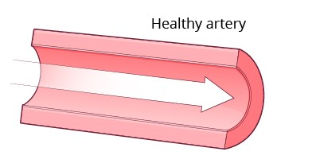

First described in 1768, coronary heart disease is a disease that affects the heart. Each year around 3.8 million men and 3.4 million women dies from it. It is currently the leading cause of death worldwide, especially in more developed countries.
The symptoms include:
- Angina-chest pain
- Heart attacks
- Heart failure
Coronary heart disease happens when the heart’s blood supply is blocked by the build up of fat in the coronary arteries. Every muscle in the body needs oxygen to function, blood carries the oxygen around the body, if blood is not able to flow to a certain muscle, that muscle will stop being able to work. This is because it will not be able to get energy out of glucose without oxygen. This illness can be caused by a variety of lifestyle choices.
You increase the risk of getting it if you:
- Smoke – Nicotine and carbon monoxide (chemicals found in cigarettes) make your heart work faster. They also increase the chances of getting blood clots. Other chemicals can also damage the lining of the coronary arteries: making it easier for a build up of fatty substances to happed.
- Have high blood pressure- High blood pressure can put a strain on the heart
- Have high cholesterol- Cholesterol is fat made by the liver from saturated fat. Even though it is essential, too much of it can cause it to build up in the coronary arteries
- Do not exercise regularly- By not exercising fat can build up in your coronary arteries, blocking blood from going to your heart.
- Have diabetes- diabetes can make the lining of the blood vessels thicker: making it harder for blood to flow. Diabetes more than doubles your chances of getting coronary Heart disease. Have high levels of lipoprotein – Lipoprotein is also fat made by your liver and is dangerous for the same reason. The levels of lipoprotein in your blood is inherited from your parents.
- Being overweight
- Having a family history of coronary heart disease- Your heritage can dictate the amount of lipoprotein